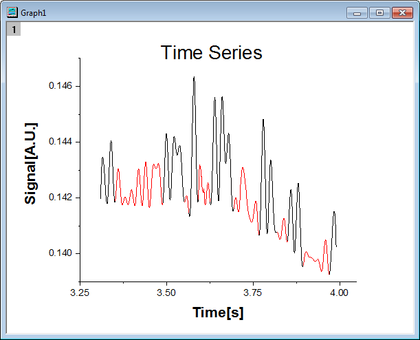

マスクデータを持つ折れ線グラフ
LineGraph-MaskedData
概要
グラフのサブ範囲のデータをマスクできます。このチュートリアルでは、折れ線グラフを最初に作成し、マスクツールを使って、グラフの下側のピークをマスクします。
- 
必要なOriginのバージョン: Origin 2015 SR0以降
学習する項目
- 折れ線グラフをプロットする
- 軸スケールを設定する
- 折れ線グラフのデータをマスクする
ステップ
- 新しいワークブックを用意します。ヘルプ: フォルダを開く: サンプルフォルダを選択して、サンプルフォルダを開きます。このフォルダ内のGraphingサブフォルダにあるLine_Graph_with_Masked_Data.txt ファイルを探します。空のワークシートにファイルをドラッグアンドドロップしてインポートします。
- ワークシートの両方の列を選択してメニューから作図：基本の2Dグラフ：折れ線を選択して、グラフを作成します。

- X 軸上でダブルクリックして軸ダイアログを開きます。以下の図のように増分値を0.25に設定します。
- 左側パネルにある垂直アイコンをクリックしてY軸のスケールを以下の図のように設定します。
- OK をクリックして軸ダイアログを閉じ、グラフの凡例を削除します。X軸のラベルを「Time[s]」に、Y軸のラベルを「Signal[A.U.]」に設定し、どちらも書式を太字でフォントサイズ28に設定します。テキストオブジェクトで「Time Series」と記述してタイトルにします。タイトルも太字に設定し、サイズは36にします。

- このグラフをアクティブにし、プロット操作・オブジェクト作成ツールバーの領域マスクツールを左クリックでおさえて、コンテキストメニューを表示します。現プロットを対象にマスクを付加するを選択してマスキングモードに入ります。
- グラフ上の適切な位置をクリックし、下側のピークを選択するように矩形の領域をドラッグして、同時にそれらをマスクします。全ての低いピークがマスクされるまでドラッグでマスクを継続します。そして、プロット操作・オブジェクト作成ツールバーのポインタツールをクリックし、マスクモードを抜けます。
 | Origin 2021以降、マスクツールでのデータポイント選択モードが変更されました。
- デフォルトが、行番号によるマスクから矩形の範囲によるマスクに変更されました。
- それ以外の挙動は以前と同じで、スペースキーを押してマスクモードを変更できます。
- システム変数 @MTI=1（永続）を使用して、デフォルトを行番号によるマスクに戻すことができます。
|